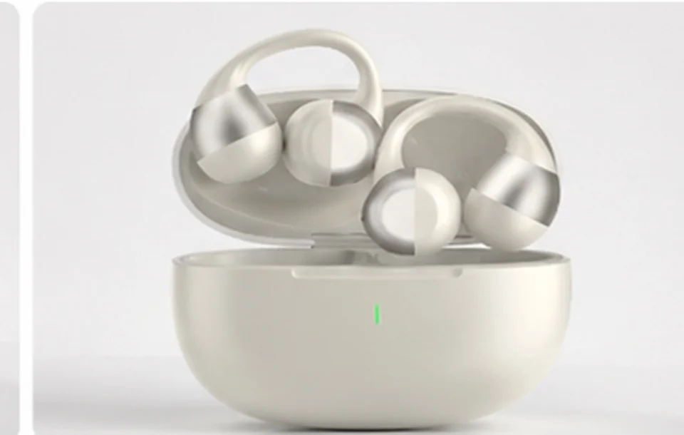
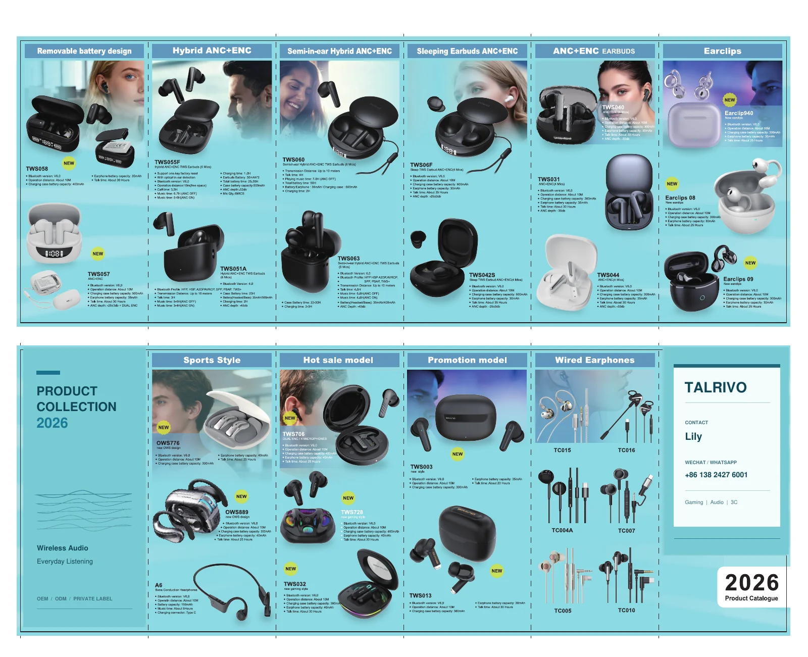

In-ear earbuds
TWS044F
A compact in-ear design with a rounded charging case and carrying-strap reference.
- Review the in-ear shape and wearing references
- Check the case, strap and package images

TWS earbuds · Private-label sourcing
Start with in-ear or open-ear earbuds. Compare the shape, case and image references, then choose a model to sample for your brand.
In-ear earbuds
A compact in-ear design with a rounded charging case and carrying-strap reference.

Open-ear clip earbuds
A clip-style open-ear design, with case, wearing-style and color references to compare.
Images show supplied product and styling references. Confirm fit, features, colors and included accessories with the selected sample.
Comparing other listed earbud configurations? Start with the driver, charging case and design evidence below. These are catalogue and image references, not completed performance tests.
A listed 6mm driver, 30mAh earbuds and 600mAh case, with round faceplates shown in the supplied renderings. Review the artwork area and case finish before sampling.
A listed 13mm driver, 35mAh earbuds and 300mAh case. The supplied views focus on the case; request matching earbud views and confirm the display and charging behavior.
A listed 12mm driver and 50mAh earbud battery, with stem and loop details in the supplied views. Review the actual fit; this record does not identify an ANC version.
2026 product catalogue

Review the 2026 product range, then share the model codes, destination market and sample requirements for your project.
PDF preserves more detail for model and specification review. The image is a lighter overview of the same catalogue.
Catalogue specifications are supplied references. Confirm the exact model version, feature performance, accessories, availability and destination-market documents before ordering. The catalogue does not establish built-in MP3 support or certification status.
Discuss catalogue modelsFrom shortlist to sample
Product FAQ
Yes. Buyers can select the base model and sample first, then discuss logo, color, charging-case direction, packaging, manual language and accessories for that version.
In Latin America searches, auricular TWS Bluetooth or auriculares TWS usually refers to true wireless Bluetooth earbuds. Buyers should still confirm the wearing style, charging case, sample version, packaging and branding details before ordering.
Confirm the destination market, sales channel, wearing style, selected model, charging-case direction, battery questions, quantity range, sample timing, branding scope and packaging needs.
Compare wearing style, charging-case design, product images, available sample version, battery questions, controls, call-use expectations, branding area, packaging direction and RFQ details. Use TWS044F for an in-ear reference and Earclip09S for an open-ear or earclip reference.
Yes. TWS earbuds can be reviewed together with gaming headsets, Type-C earphones or Bluetooth speakers when a buyer is planning a wider audio assortment.
Related pages
Share the target market, sales channel, wearing style, quantity range, sample timing and branding or packaging needs. TALRIVO can recommend suitable models for review.
Model directory